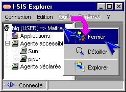
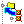
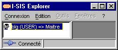

I-SIS Explorer

Guide d'utilisation
|
|
I-SIS Explorer |
|
|
Guide d'utilisation |
||
La méthode de fermeture de nœud est disponible sur tout nœud. Elle ferme le nœud sur lequel elle est exécutée : la branche descendante, les explorations et les sessions ouvertes en aval sont fermées. Pour reconstruire la branche dans son état précédent, il faut ré-exécuter les mêmes méthodes d'exploration et d'ouverture de session que lors de sa première construction.
Pointez un nœud instance de l'arborescence,
Cliquez avec le bouton droit de la souris pour afficher le menu contextuel,

Cliquez la méthode de fermeture (identifiable grâce à l'icône ) avec le bouton gauche de la souris,
La branche descendante du nœud disparaît. Pour la reconstruire, il faut ré-exécuter toutes les méthodes exécutées initialement.

Copyright © 2003 BV Associates. Tous droits réservés.